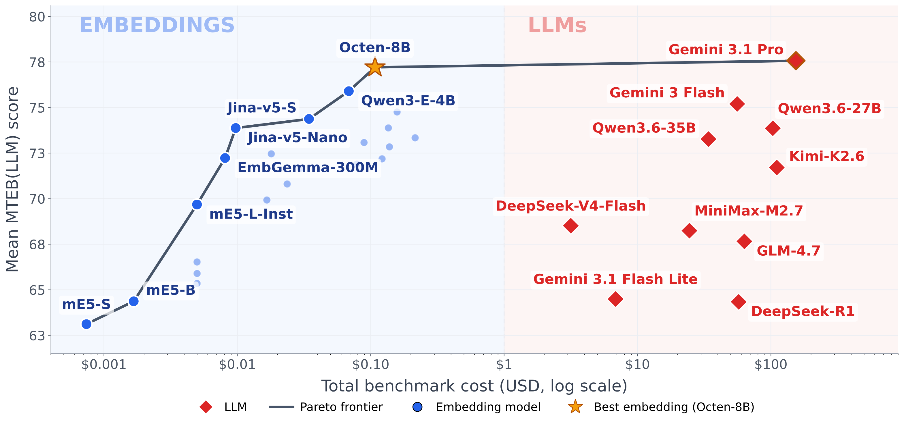
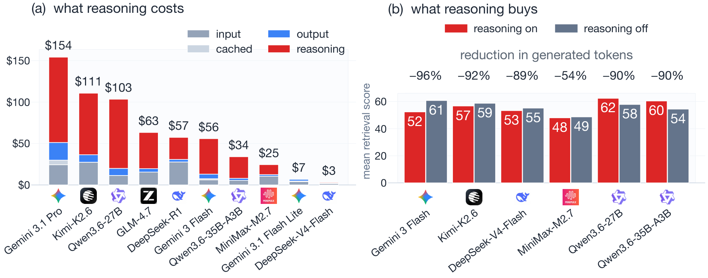

The Embedder's Dilemma: LLMs Are Better, but at What Cost?
Paper: arXiv 2608.12875 (v1, Aug 13 2026), by Adnan El Assadi (Harvard), Niklas Muennighoff (Stanford), Jinhyuk Lee (Independent Researcher); accepted at COLM 2026 (per the thread). Grounded in the full arXiv HTML. Code, the mteb/llm-eval-* datasets, and every result file are released at github.com/embeddings-benchmark/embedders-dilemma, built on the MTEB framework.
TL;DR
- Introduces MTEB(LLM): 37 fixed-seed subsets of MTEB tasks on which ten frontier LLMs (prompted zero-shot, no embedding training) and 26 embedding models (118M–14B params) are scored on identical data across classification, STS, clustering, pair classification, and retrieval — with exact cost accounting for every model. Headline: the paradigms tie in aggregate — Gemini 3.1 Pro 77.6 vs. Octen-8B 77.2, a paired-bootstrap Δ of +0.3 (p = 0.85).
- The tie decomposes cleanly: LLMs win retrieval (+8.5, p < 0.05; corpus-in-context, Pro takes 5/6 tasks), embeddings win classification (−5.6, p < 0.01; kNN over labelled train sets vs. zero-shot prompts), and clustering/STS/pair classification are statistical ties. Some embedding model matches the best LLM on 7/8 classification and 7/10 STS tasks — but on only 1/6 retrieval tasks.
- Parity costs 1,431×: one benchmark pass is $154.14 for Pro vs. $0.11 for Octen-8B (338–2,424× across hardware/pricing scenarios), and open LLMs on the same H100 process 2.5–736× fewer tokens/s. The structural driver is the thinking-token tax — reasoning is 28–81% of LLM inference cost — yet cutting thinking by 54–96% preserves or improves retrieval for four of six models (all six tasks for Gemini 3 Flash).
Why this matters
Every memory and RAG system in this tracker sits on a retrieval substrate, and the perennial temptation is to skip the embedding index and just let the model read everything — corpus-in-context, agentic grep, listwise LLM ranking. This paper prices that decision under control: same tasks, same data, same metrics — cosine over precomputed vectors vs. a frontier LLM reading the actual text. The answer is unusually crisp. Zero-shot Gemini 3.1 Pro now matches the best contrastively-trained embedding model in aggregate — a capability milestone, since embedders get there via hard-negative mining and multi-stage distillation while the LLM gets there with a prompt — but the parity point costs three orders of magnitude more, and the advantage is confined to exactly one category. For anyone budgeting an agent-memory stack, Figure 1 is the whole argument: the Pareto frontier is embedding models plus a single LLM that buys 0.4 points for 1,431× the money.

Figure 1 from the paper (rasterized from the arXiv SVG): mean MTEB(LLM) score vs. total benchmark cost (log scale). The frontier runs mE5-S → Jina-v5 → Octen-8B (\(0.11, 77.2), then jumps three orders of magnitude to Gemini 3.1 Pro (\)154, 77.6). Every other LLM is strictly dominated.The core idea
Treat "should I replace my embedding pipeline with an LLM?" as a measurable engineering question rather than a vibe. Concretely: build LLM-runnable subsets of MTEB (corpora small enough to fit in context: retrieval corpora are 82–415 documents), run complete deployment pipelines for both paradigms — embeddings get kNN/cosine/k-means, LLMs get zero-shot structured-output prompts — and log every token so quality and cost land on one plot. The framing deliberately reproduces the classic bi-encoder vs. cross-encoder tradeoff at LLM scale: the single design axis separating the architectures is how many documents the model reads jointly with the query (embeddings: zero — documents encoded offline; cross-encoder reranker: one at a time; LLM listwise reranker: the top-k shortlist; corpus-in-context LLM: all N). Cost and quality both increase along that axis, because query-conditioned computation cannot be precomputed and recurs on every query.
How it works
Models. Ten LLMs across six families: Gemini 3.1 Pro, Gemini 3 Flash, Gemini 3.1 Flash-Lite (the non-reasoning baseline); DeepSeek-R1, DeepSeek-V4-Flash, Qwen3.6-27B, Qwen3.6-35B-A3B, GLM-4.7, Kimi-K2.6, MiniMax-M2.7 via OpenRouter. 26 embedding models from mE5-small (118M) to F2LLM-v2-14B, all run on one H100 80GB — including LLM-backbone embedders (E5-Mistral, GritLM, Qwen3-Embedding), treated as embeddings since they emit vectors.
Protocol. Each of the 37 tasks is scored with both pipelines on the same items (seed 42; datasets on HF as mteb/llm-eval-*):
# MTEB(LLM): one benchmark pass, both paradigms on identical data
for task in {8 classification, 10 STS, 9 clustering, 4 pair-cls, 6 retrieval}:
# --- embedding pipeline (one batched H100 pass over all texts) ---
E = encode(texts)
cls: kNN over labelled train-split embeddings -> test predictions
sts: spearman( cosine(E_a, E_b), gold )
clust: k-means(E, true k) -> V-measure
pair: cosine + post-hoc threshold sweep on test set (MTEB convention)
retr: rank corpus by cosine(q, d) -> Recall@1
# --- LLM pipeline (zero-shot, JSON mode, schema {reasoning, output}) ---
cls: one call per item -> label from the provided list
sts: one call per pair -> float on the task's native scale
clust: ALL docs, numbered, + true k in ONE prompt -> JSON assignments
pair: one call per pair -> binary verdict with reasoning
retr: corpus-in-context: all 82-415 docs numbered in the prompt,
corpus prefix cached across queries -> ranked doc IDs
on schema failure: retry with correction (max 2), else null = incorrect
# cost, per model:
emb: tokenize with the model's own tokenizer; $ = tok/1e6 * r_GPU / T
llm: Eq.(1) from provider usage_stats; thinking billed at output rate
Cost accounting. LLM cost comes from provider usage_stats, billing every generated token — reasoning included — at the output rate:
where \(r_{\text{in}}, r_{\text{out}}\) are the provider's per-token input/output rates and cached input bills at 10% (Pro: \(2/\)12 per MTok; open models at OpenRouter rates). Thinking tokens are cross-checked against the identity \(\texttt{thoughts}=\texttt{total}-\texttt{prompt}-\texttt{candidates}\) (exact agreement in all cases). Embedding cost is measured max-throughput encoding on an H100 at sequence length 512:
with \(T\) sustained tokens/hour, counting tokens with each model's own tokenizer (a GPT-2 proxy would overestimate 22–54%). LLM totals range $3.16 (DeepSeek-V4-Flash) to $154.14 (Pro); embeddings $0.001 (mE5-small) to $0.22 (F2LLM-14B).
Results
Aggregate tie, categorical split. Pro 77.6 > Octen-8B 77.2 > Qwen3-E-8B 77.0; paired bootstrap over tasks (10,000 resamples): Δ = +0.3, 95% CI [−2.4, +3.1], p = 0.85. Category tests: retrieval +8.5 for LLMs (CI [+0.2, +16.8], p < 0.05 — note it fails a Bonferroni α = 0.01), classification −5.6 for LLMs (CI [−9.2, −2.4], p < 0.01, survives Bonferroni), everything else flat (clustering p = 0.96, STS p = 0.75, pair-cls p = 0.50). SFR-2 tops classification at 90.8 vs. Pro's 85.2, widest on fine-grained label spaces (Banking77: 77 classes) — the error analysis shows Pro over-interpreting ("How do I locate my card?" → lost_or_stolen_card; gold card_arrival, which kNN gets by anchoring to labelled neighbours).
Retrieval is the one real LLM win. Pro leads 5/6 tasks: FQuAD 92.0 vs. 72.0 (the largest gap; French reading comprehension where joint query–document processing pays), Consumer-Contracts 86.0 vs. 70.0, PublicHealth 90.0 vs. 85.0, HC3-Finance 71.0 vs. 67.0, TwitterHjerne 33.4 vs. 31.5. The exception is diagnostic: on AILAStatutes (case facts → statutes), Octen-8B's 23.2 beats Pro's 14.5 because Pro's associative reasoning over-retrieves broadly related provisions (14 documents against 4 gold statutes) where cosine similarity stays narrow. Reasoning helps reading comprehension; it hurts precision-bound matching.
The thinking-token tax. Reasoning models generate 8–26M thinking tokens against 1–3M output tokens on this benchmark; reasoning is 28–81% of inference cost (81% for Qwen3.6-27B). And it mostly buys nothing here: Flash at reasoning_effort=low cuts thinking 54–94% and improves all six retrieval tasks (+17.0 on PublicHealthQA, +6.3 on AILAStatutes; mean retrieval 52 → 61), while classification moves <1 point. Across families, four of six models hold or gain with 54–96% fewer generated tokens; only the two Qwen3.6 models lose ground. Five-shot prompting doesn't rescue classification either — Banking77 collapses 0.831 → 0.165 with five examples for 77 labels.

Figure 4 from the paper: (a) reasoning tokens (red) dominate cost for every reasoning model — Pro's $154 is mostly thinking; (b) disabling reasoning cuts generated tokens 54–96% while retrieval holds or improves for 4/6 models.Rerank, don't read everything. On BRIGHT (reasoning-heavy), a Qwen3.6-27B listwise reranker lifts a Qwen3-E-8B first stage from 22.3 → 35.1 nDCG@10 for $30 (the MoE 35B-A3B: 33.6 for $10) — versus $154 for full corpus-in-context. On semantic BEIR, the strong embedding alone (63.1) beats every reranked configuration (best 60.3). Throughput seals it: on the identical H100, embedding models run 14.7K–4.3M tok/s against 5.4–5.9K tok/s for the open LLMs (2.5–736×) — encoder pass vs. autoregressive decode. And the ratio is conservative: document embeddings amortise across queries and users; corpus-in-context reading recurs per query even with caching.
How it connects
- discriminative-retrieval — Meta's production argument for the same conclusion from the other end: keep the two-tower factorization, make the towers LLM backbones, and confine joint attention to a cross-encoder teacher distilled offline. This paper prices the generation-at-serving-time tax; that one shows what refusing to pay it keeps (NE parity at 0.5% of training data, staleness resilience). Together: LLM representations yes, LLM decoding on the query path no.
- docmemo-probabilistic-memory-retrieval — the hybrid this paper's Pareto math mandates, operationalized: cheap retriever scores as priors, LLM reasoning verdicts as observations, Thompson sampling deciding where to spend the expensive reads. The Embedder's Dilemma explains why its economics work — reasoning only pays on the reasoning-heavy subset.
- memory-decoder — the amortisation argument taken into weight space: distill the retriever into a parametric memory once, offline, so per-query cost collapses to a forward pass. Same accounting logic as this paper's "embedding training is one-time, LLM inference recurs."
- agent-memory-second-half — the survey's substrate axis (vector index vs. text record vs. weights) finally gets a price list: the vector-index substrate is near-free ($0.11/pass, millions of tok/s) and quality-competitive everywhere except reasoning-intensive lookup — exactly where a learned memory-management policy should spend its LLM calls.
- pro-long-programmatic-memory — the deflationary counterpoint: PRO-LONG skips embeddings and lets a coding agent grep an append-only log — LLM-mediated retrieval over raw text, affordable only because the reads are selective. This paper shows what unselective LLM reading costs, and that on keyword-centric lookup (TwitterHjerne: 33.4 vs. 31.5) it buys almost nothing over cosine.
- mobilemem — the regime where the dilemma isn't one: 1.72M tokens per on-device user rules out corpus-in-context outright, and its finding that stronger retrieval gets more confidently wrong on unanswerable questions echoes AILAStatutes — added reasoning power can hurt precision-bound memory tasks.
Critical take
- The classification result is protocol, and the paper says so. kNN gets the full labelled training split; the LLM gets label names and at most five examples. Pair classification additionally sweeps the decision threshold post-hoc on the test set (MTEB convention) with no LLM analogue. Add contrastive pretraining that overlaps these exact domains and label conventions ("locate my card" →
card_arrivalis a dataset convention, not semantics), and "embeddings lead on classification" reads as "labelled in-domain references beat zero-shot guessing" — true, useful for deployment, but not a representational claim. - The retrieval result is also protocol, less loudly. The +8.5 comes from 82–415-document corpora that fit in one cached prompt — granting the LLM global reading, which the authors concede is "a property of the protocol rather than a measured effect," with corpus-size scaling unvaried. The CI is [+0.2, +16.8] and fails their own Bonferroni threshold; six tasks scored by Recall@1 is thin. The BEIR/BRIGHT rerank study is the more production-credible evidence, and there the LLM only wins on BRIGHT.
- The 1,431× headline mixes pricing bases: API retail (provider margin included) for LLMs vs. raw spot GPU rental for embeddings, and the sensitivity analysis varies only the embedding side (338–2,424×) — a self-hosted Qwen3.6-35B-A3B arm would have been the fair third column. The same-hardware throughput numbers (2.5–736×) are the clean, margin-free version of the claim, and still damning.
- Coverage gaps the authors flag: no GPT-5, no Claude Opus 4.6 ("remain to be evaluated"), and the best embedding model, Octen-8B, ships without a paper reference. The snapshot will age fast; the released MTEB-compatible pipeline at least makes refreshes cheap.
If you remember three things
- Zero-shot frontier LLMs now match trained embedders in aggregate (77.6 vs. 77.2, p = 0.85) — but the win is confined to reasoning-heavy retrieval (+8.5), embeddings hold classification (−5.6), and everything else is a tie, so the default substrate for similarity/classification/clustering workloads is unchanged.
- The parity point costs 1,431× ($154.14 vs. $0.11 per pass; 338–2,424× across scenarios; 2.5–736× throughput on identical hardware), and 28–81% of the LLM bill is thinking tokens that mostly don't help — reduced reasoning preserved or improved retrieval for 4/6 models. If you deploy LLM retrieval, turn the reasoning budget down first.
- Buy reasoning by the shortlist, not by the corpus: embedding first stage + LLM listwise rerank gets 35.1 vs. 22.3 nDCG@10 on BRIGHT for $10–30 where corpus-in-context costs $154 — and on semantic retrieval (BEIR) skip the LLM entirely, because the strong embedder alone beats every reranked configuration.